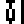
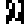
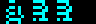

43 characters of 8 by 8 pixels at FONT, one font for everything the game writes: the menu, the panel's heading and the score, the screen after a game. Each is eight bytes, the top row first, and the printer (PRINT_CHAR) finds one at FONT_BASE plus eight times its code. For text FONT_BASE is 384 bytes below the font (PRINT_TEXT_SINGLE_COLOUR, PRINT_TEXT), so that the codes are ASCII: $30 is the 0, $41 the A. For numbers it is the font itself (PRINT_BCD), so that a digit's value is its code. There is no lower case, and a space, which would be below the font, is printed as code $3C, one of the 4 blanks ($3C, $3E, $3F, $40). Three signs are where ASCII has others: the semicolon's code is a copyright sign, the colon's a full stop and the equals sign's a per cent sign.
Printed here by the game's PRINT_CODE with the text base, a character at a time, in bright white:
0 | 1 |  2 | 3 | 4 |  5 | 6 | 7 | 8 |  9 |  $3A full stop |
 $3B copyright sign |  $3C | $3D per cent sign |  $3E |  $3F |  $40 | A | B | C | D |  E |
 F |  G |  H | I | J |  K | L |  M |  N |  O |  P |
Q |  R |  S | T | U | V |  W | X | Y | Z |
Compared with the fonts of the other Ultimate games at this build, character by character: every one of the 39 drawn characters is one of Knight Lore's, byte for byte; only 2 are Alien 8's (the full stop, the copyright sign), at other codes; all but 6, 7, the full stop, the per cent sign, A are Pentagram's. Knight Lore's font has the digits and then the letters, with the full stop, the copyright sign and the per cent sign after them; Nightshade's holds the same characters rearranged into ASCII order, so that its printer can take a letter's own code (see Alien 8's font and Pentagram's).
A hundred per cent
The percentage after a game is printed by PRINT_PERCENTAGE, and at a hundred it goes into the digits' printer past the instructions that set FONT_BASE (PRINT_BCD): the text printed just before has left it at the text base, where codes 0 and 1 are bytes of the buildings. Both ways, by the game's own routine with the percentage set to 100:
 as the game prints it | with the digits' base |